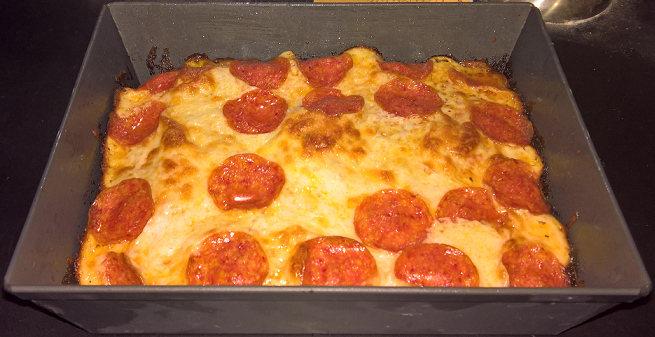

Pizza

Description:
Detroit style pizza at home
Recipe assumes you have a detroit style pizza pan>
Ingredients:
Sauce:
- 28 oz can crushed tomatoes
- 3 TBSP Butter
- 1/4 to 1/2 tsp crushed red pepper
- 2 tsp oreg
- salt to taste
Crust:
- 300g bread or all-purpose flour
- 210g water
- 1 packet yeast
- 6 grams salt
- olive oil
Toppings:
- Cheese
- Optional: Pepperoni
- Optional:Peppers
- Optional:Sausage
- Whatever is your preference
Option to finish
- Parmesan
- Crushed red pepper
- Oregano
- Garlic
Steps:
Crust/Dough
- Activate yeast separately if desired.
- Add flour to a large bowl with the yeast and salt
- Add warm water, no hotter than 110 degrees fahrenheit
- Mix with hands until combined. Cover and let rest for 15 minutes
- Uncover and need dough for 6-8 minutes
- Coat bowl and dough with some olive oil. Cover and let it rest in a warm area for 2 hours, or in the fridge for 24 hours.
Sauce:
- Add all ingredients, and a small pinch of salt to a small sauce pan.*More salt can be added later
- Simmer sauce for approximately 30 mins over low-medium heat until reduced
- Add salt to taste and set aside
Pizza
- Preheat oven to 500 degrees fahrenheit.
- Place a generous amount of oil in the bottom of the pizza pan, ensure it is well coated.
- Add the dough the pan and gently stretch it to the edges
- Dough may retract, but allow for 30 minutes for the final proof to take place in the pan, and it will become easier over time to stretch the dough to the edges.
- Par-bake the dough/crust in the over for approximately 6 minutes
- Remove dough from oven, optional: add your toppings directly on the crust or add olive oil, garlic powder, and oregano as well.
- Add the cheese directly to the crust
- Add any desired toppings
- Place the pizza sauce in lines over the cheese.
- Return pizza to the over for approximately 10 more minutes.
- Remove pizza from oven, and the pizza pan as well. You can place the pizza on a wire rack to help keep the bottom crispy.
- Cut and enjoy once the pizza has cooled down some.